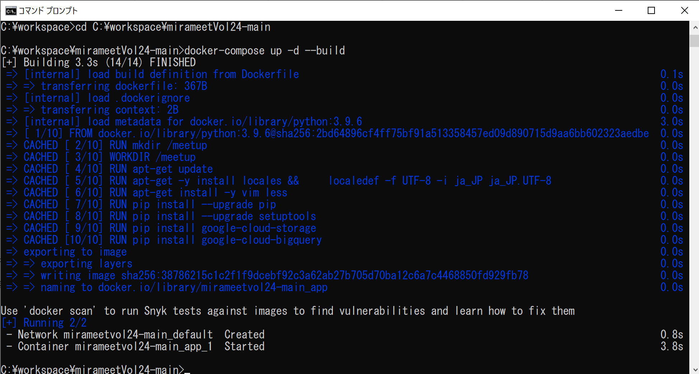

各処理の実行と処理結果の確認
この手順では、手順２で修正したOperationObject.pyを含む各ソースを動かし、BigQueryのデータを操作していきます。
1. カレントディレクトリの移動
Zipファイルを解凍したディレクトリまで移動
cd ～～～mirameetVol24-main
2. Dockerでコンテナを起動
docker-compose up -d --build

3. 起動したDockerコンテナに接続
docker-compose exec app bash

4. GcsUploader01.pyの実行
CSVデータファイルをGCSバケット上にアップロードする
python GcsUploader01.py
▼中身
import os
import OperationObject # 操作対象の設定情報取得
from google.cloud import storage
# GCP認証設定
os.environ['GOOGLE_APPLICATION_CREDENTIALS'] = OperationObject.GOOGLE_APPLICATION_CREDENTIALS
# GCSクライアントAPIの利用宣言
client = storage.Client()
# GCSバケット取得
bucket = client.get_bucket(OperationObject.bucket_name)
# CSVファイルアップロード
blob = bucket.blob(os.path.basename(OperationObject.source_file_name))
blob.upload_from_filename(OperationObject.source_file_name)
print('File {} uploaded to {}.'.format(
OperationObject.source_file_name,
bucket))
↓正常終了
mirameetVol24-main\src\csvの中の「gcs-example.csv」が、GCSにアップロードされていることを確認
5. GcsToBigQuery02.pyの実行
GCSにアップロードしたCSVデータをBigQueryにインサートする
python GcsToBigQuery02.py
▼中身
import os
import OperationObject # 操作対象の設定情報取得
from google.cloud import bigquery
# GCP認証設定
os.environ['GOOGLE_APPLICATION_CREDENTIALS'] = OperationObject.GOOGLE_APPLICATION_CREDENTIALS
# BigQueryクライアントAPIを利用宣言
client = bigquery.Client(OperationObject.project_id)
# テーブル情報の取得
table_info = client.dataset(OperationObject.dataset_id).table(OperationObject.table_id)
# 登録対象のテーブル定義を設定
job_config = bigquery.LoadJobConfig(
# テーブルカラムマッピング情報の設定
schema=[
bigquery.SchemaField("id", "NUMERIC"),
bigquery.SchemaField("mira_code", "STRING"),
bigquery.SchemaField("mira_text", "STRING"),
bigquery.SchemaField("work_date", "STRING")
],
# 読み込み開始行の指定（ヘッダ行がないため0を設定）
skip_leading_rows=0,
# ソースフォーマットの指定（CSV形式に設定）
source_format=bigquery.SourceFormat.CSV,
)
# GCSバケットをロードし、テーブルに登録
load_job = client.load_table_from_uri(
OperationObject.url_gs_example_csv, table_info, job_config=job_config
)
load_job.result() # load_table_from_uriが終了するまで待機
regist_table_info = client.get_table(table_info) # 登録後のテーブル情報取得
print("Loaded {} rows.".format(regist_table_info.num_rows))
↓正常終了
「gcs-example.csv」の中のデータがBigQueryにインサートされていることを確認
プレビュータグでデータの中身を確認
6. UpdateDeleteBigQuery03.pyの実行
BigQueryのデータを更新・削除する
python UpdateDeleteBigQuery03.py
▼中身
import os
import OperationObject # 操作対象の設定情報取得
from google.cloud import bigquery
# GCP認証設定
os.environ['GOOGLE_APPLICATION_CREDENTIALS'] = OperationObject.GOOGLE_APPLICATION_CREDENTIALS
# BigQueryクライアントAPIの利用宣言
client = bigquery.Client()
# 更新SQL生成
updateQuery = "UPDATE `{0}.{1}.{2}` SET mira_text = '更新' WHERE id = 2".\
format(OperationObject.project_id, OperationObject.dataset_id, OperationObject.table_id)
# SQL実行
client.query(updateQuery).result()
print("Updated ID=2.")
# 削除SQL生成
deleteQuery = "DELETE `{0}.{1}.{2}` WHERE id = 3".\
format(OperationObject.project_id, OperationObject.dataset_id, OperationObject.table_id)
# SQL実行
client.query(deleteQuery).result()
print("Deleted ID=3.")
↓正常終了
ID＝2のデータが更新、ID＝3のデータが削除されていることを確認
7. ExportBigQuery04.pyの実行
BigQueryのデータをCSVデータファイルとしてGCSバケットにエクスポートする
python ExportBigQuery04.py
▼中身
import os
import OperationObject # 操作対象の設定情報取得
from google.cloud import bigquery
# GCP認証設定
os.environ['GOOGLE_APPLICATION_CREDENTIALS'] = OperationObject.GOOGLE_APPLICATION_CREDENTIALS
# BigQueryクライアントAPIの利用宣言
client = bigquery.Client(OperationObject.project_id)
# テーブル情報の取得
table_info = client.dataset(OperationObject.dataset_id).table(OperationObject.table_id)
# データ取得結果をGCSバケットにエキスポート
extract_job = client.extract_table(
table_info,
OperationObject.out_url_gs_example_csv,
)
extract_job.result() # extract_tableが終了するまで待機
print(
"Exported {}:{}.{} to {}".format(
OperationObject.project_id,
OperationObject.dataset_id,
OperationObject.table_id,
OperationObject.out_url_gs_example_csv)
)
↓正常終了
BigQueryのデータが「out-gcs-example.csv」ファイルとしてGCSに出力されていることを確認
ダウンロードボタンでファイルをローカルにダウンロード
ダウンロードしたCSVファイルの中身で更新後の状態を確認